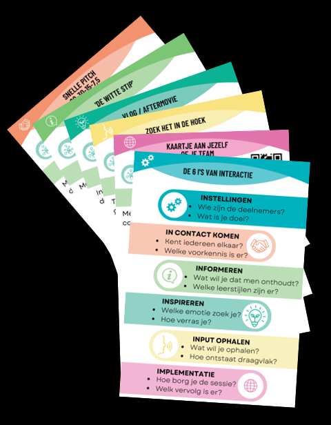
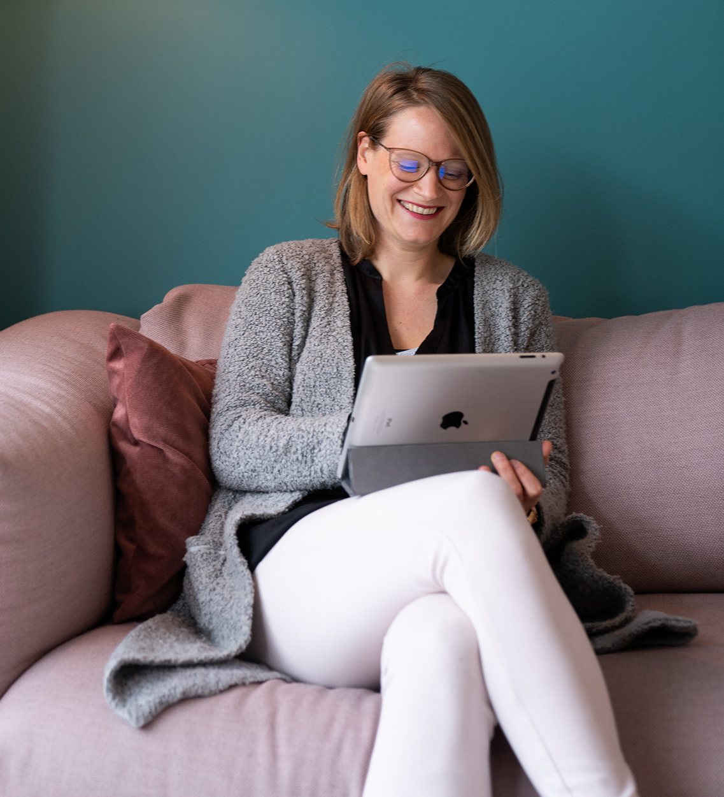

Interactiekaarten Set & Workshop
Ben jij bekend met dat ongemakkelijke moment aan het einde van een presentatie wanneer de spreker vraagt: “Zijn er nog vragen?” en er een pijnlijke stilte volgt?
Onze missie is om jou te helpen de juiste balans te vinden tussen zenden en interactie, en die ongemakkelijke stilte aan het einde van je presentatie te voorkomen. Met de unieke set Interactiekaarten en onze energieke workshops zorgen we ervoor dat elke bijeenkomst interactief, efficiënt en effectief wordt.

Ons uitgangspunt zijn de 6 i’s van interactie: uitgedaagd worden om na te denken over de beoogde impact en het doel. Vanuit daar kies je categorieën zoals: In contact komen, Informeren, Inspireren, Input ophalen & Implementatie.
Sta jij wel eens voor groepen of geef jij presentaties? Hoe fijn is het als jouw publiek actief en betrokken is, jouw verhaal indruk maakt en jouw doelen worden bereikt. Met de interactiekaarten ga je zelf aan de slag en krijg je een berg inspiratie als bonus.
Professionals houden van inhoud. Wij zijn er voor jou om daar ruimte, lucht en plezier aan toe te voegen.

Dagvoorzitter, podcastmaker en facilitator. Rust voor jou, energie in jouw sessie; met een achtergrond in journalistiek houdt zij van de vraag achter de vraag.
Organisatiecoach en Serious Game Facilitator. Zijn missie is werkplekken leuker maken zodat iedereen het beste presteert door spel in te zetten op het werk.
Ruim 120 enthousiaste deelnemers gingen je voor (o.a. Hogeschool Utrecht, HRD Congres, Develhub Days).
Wil je meer weten over wat we voor jou kunnen doen? Stuur ons een e-mail. We verspreiden met heel veel plezier onze missie!
Nooit meer saaie sessies en de interactiekaarten zijn ontwikkeld door:
creatingsessions.nl en theseriousgamers.com.